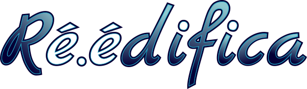

Les présentes conditions générales d'utilisation (ci-après dénommées « Conditions ») ont pour objet de définir les modalités et conditions de mise à disposition des services proposés par Réédifica, ci-après dénommés « les services ».
Réédification offre un service de création de contenu « Histoire » dans un forum de discussion et de le partager. Les présentes conditions ont vocation à s'appliquer à la personne gérant le forum, dit l'administrateur, ainsi qu'aux personnes susceptibles d'y participer, les membres & les modérateurs (ci-après dénommées « Joueur(s) ») ou les visiteurs (ci-après dénommées « Invité(s) »)
Responsabilité de la société
Information – Les informations relatives aux services fournies par Réédifica le sont à titre indicatif, et n'ont pas de valeur contractuelle. La société ne garantit pas l'exactitude de ces informations, et peut procéder à leur modification ou mises à jour à tout moment sans préavis.
Accès aux services – Réédifica met en œuvre les moyens nécessaires afin d'éviter tout ralentissement ou toute interruption impromptue des services, sans toutefois pouvoir garantir l'absence d'interruption, ni même la durée d'une telle interruption. La responsabilité de Réédifica ne peut pas être engagée en cas de problème de réseau, de serveur, ou en cas de défaillance ou panne quelconque. A ce titre, aucun remboursement ne peut être envisagé pour un arrêt des services, un dommage, ou une perte de contenu.
Sécurité des services – Réédifica met en œuvre les moyens nécessaires afin d'assurer la sécurité des contenus, notamment par le recours à une sauvegarde à intervalles réguliers de l'ensemble des contenus. Ces sauvegardes sont accessibles à l'Administrateur du forum, lequel peut restaurer son forum à l'état dans lequel il se trouvait à une date antérieure, dans la limite du temps de conservation de ces sauvegardes. En dehors des dispositions relatives à la portabilité des données (cf. infra), aucune sauvegarde d'un forum, dump, back-up de tout ou partie des données qu'il contient ne pourra être fournie, y compris pour les forums ayant procédé à l'importation de leur base de données sur le service Réédifica
Contenus – Réédifica n'exerce aucune modération a priori ou vérification systématique des contenus publiés par le biais de ses services, et n'a donc pas connaissance de la teneur de ceux-ci. L'Administrateur doit s'assurer de leur conformité aux présentes Conditions et lois en vigueur. En conséquence, Réédifica ne saurait être responsable de ces contenus.
Données recueillies
L’utilisation des services fournis par Forumactif nécessite de recueillir des données vous concernant, notamment au cours de la création d’un forum, de l’inscription ou de la participation à l’une de ces discussions. La plupart de ces données n’ont pas le caractère de données personnelles au sens du règlement n°2016/679, dit règlement général sur la protection des données (RGPD). Toutefois, certaines sont effectivement des données à caractère personnelle et bénéficie d’une protection spécifique.
Ce recueil des données est effectué soit par le biais des informations que vous nous communiquez, (essentiellement votre identifiant, adresse e-mail, et mot de passe), soit par l’utilisation des services elle-même, pour des données techniques nécessaires au bon fonctionnement de nos forums (informations relatives à l’appareil utilisé, adresse IP, …).
Forumactif met en œuvre les mesures techniques et organisationnelles appropriées pour garantir que, par défaut, seules les données à caractère personnel qui sont nécessaires au regard de chaque finalité spécifique du traitement sont traitées.
Les données ainsi recueillies seront conservées aussi longtemps que l’utilisation des services le nécessitera, et pour certaines d’entre elles, pour une durée minimale imposée par la loi et la règlementation.
Responsabilité de l'utilisateur
Sécurité de son compte – A l'inscription sur un forum, l'Utilisateur est amené à choisir un nom d'utilisateur et un mot de passe. L'Utilisateur est seul responsable de la confidentialité de ses identifiants, et le demeure en cas d'actions non autorisées effectuées par un tiers grâce à ceux-ci. Il est conseillé, à ce titre, de mettre fin à la session (déconnexion) à l'issue de l'utilisation des services. En cas d'utilisation frauduleuse de ses identifiants, l'Utilisateur a l'obligation d'informer sans délai Ré.édifica en indiquant les violations ayant pu être commises.
Dommages causés – L'Utilisateur est responsable des dommages de toute nature, matériels ou immatériels, directs ou indirects, causés à tout tiers, ainsi qu'à Réédifica du fait de l'utilisation ou de l'exploitation illicite des services, quels que soient la cause et le lieu de survenance de ces dommages et garantit Réédifica des conséquences des réclamations ou actions dont elle pourrait faire l'objet. L'Utilisateur renonce en outre à exercer tout recours contre Réédifica dans le cas de poursuites diligentées par un tiers à son encontre du fait de l'utilisation et/ou de l'exploitation illicite des services.
Comportements et contenus prohibés
En utilisant les services proposés par Réédifica, l'Utilisateur s'engage à en faire un usage conforme au but pour lequel ils ont été conçus, et à ne pas utiliser les produits et services afin – notamment – d'inciter, de favoriser, d'accueillir ou de présenter sous un jour favorable :
- Le piratage, hacking, spamming, et attaques contre des réseaux et/ou serveurs, le phishing, le malware, l'intrusion dans le réseau de tiers,
- Les contenus à caractère sexuel, obscène, pornographique,
- Les contenus violents, diffamants, discriminants, incitants à la haine raciale, les crimes contre l'humanité,
- Le partage, l'hébergement, la diffusion ou le piratage d'œuvre et contenus protégés par le droit d'auteur et la propriété intellectuelle, ou toute pratique contrefaisante,
- La vente, l'échange ou le don de produits soumis à législation spéciale, de médicaments soumis ou non à prescription médicale, de produits stupéfiants et autres substances illicites,
- La fraude à la carte bancaire, ou les pratiques trompeuses.
- Les atteintes aux droits et aux intérêts des mineurs,
- Tout comportement contraire aux lois en vigueur, portant atteinte aux droits des tiers, ou préjudiciable à ceux-ci.
Acceptation et modifications
En utilisant les services de Réédifica, l'Utilisateur reconnait sans réserve, limitation ou qualification avoir lu et accepté les présentes Conditions, et s'engage à satisfaire aux termes de celles-ci, sans préjudice de l'application éventuelle d'autres conditions ou règles propres à certains services spécifiques.
Les présentes Conditions peuvent être modifiées à tout moment, à la discrétion de Réédifica. Ces modifications sont d'application immédiate pour les nouveaux Utilisateurs. Tous les Utilisateurs préexistants devront se conformer aux modifications apportées dans un délai de 30 jours à compter de la notification qui leur en sera faite, par tout moyen.
